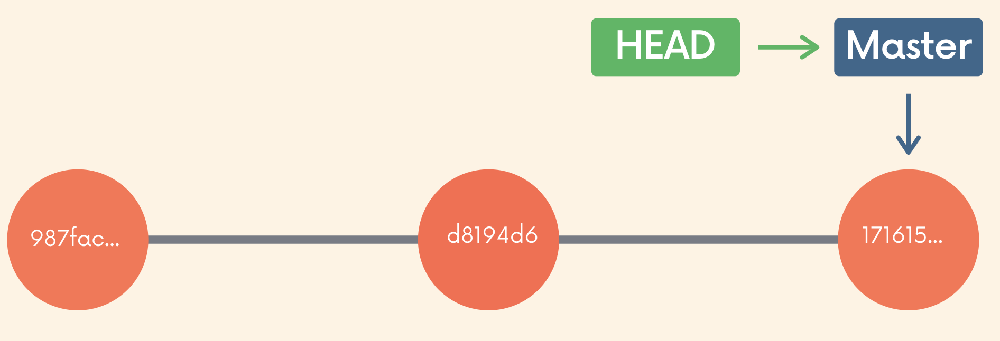

Git 101: HEAD, git checkout, reset, revert & restore (P4)
HEAD
Trước kia mỗi lần gõ lệnh git log, mình lại hay thấy có HEAD → develop, lúc đấy chẳng hiểu HEAD là cái quái gì, mà nói thật là lười. ko hiểu nó vẫn thấy sống tốt nên kệ. Tuy nhiên, phải nói đây cũng là 1 thành phần quan trọng, mà nếu hiểu nó, chúng ta sẽ dễ dàng làm việc hơn với git. Ok, cùng bắt đầu tìm hiểu nào.
Có thể nói, Git repository là tập hợp của các object và đường dẫn (reference). Object có mối quan hệ với object khác, đường dẫn trỏ đến object hoặc trỏ đến 1 đường dẫn khác.
Object tiêu biểu nhất của git là commit.
Đường dẫn tiêu biểu nhất của git là nhánh (branch). Nhánh bản chất 1 đường dẫn trỏ đến 1 commit, và từ commit này khi dùng lệnh git log chúng ta có thể lấy ra được hết danh sách những commit cha của nó.
Tương tự nhánh, HEAD cũng là 1 đường dẫn, trỏ đến 1 nhánh hoặc trực tiếp đến 1 commit nào đó. HEAD xác định vị trí chúng ta đang …….
Mặc định HEAD sẽ trỏ đến đường dẫn nhánh. Khi tạo 1 commit mới, thì đường dẫn nhánh này cũng thay đổi, do vậy HEAD sẽ gián tiếp trỏ đến commit gần nhất của nhánh mà không phải thay đổi giá trị gì.
Trạng thái trỏ đến đường dẫn nhánh được gọi là attached HEAD

Trạng thái khi HEAD trỏ đến trực tiếp 1 commit được gọi là detached HEAD. Để chuyển sang trạng thái này, chúng ta có thể dùng lệnh git checkout

git checkout
git checkout <commit-hash>
Khi dùng lệnh git checkout, HEAD sẽ trỏ trực tiếp đến commit đó. Lúc này, chúng ta có thể xem lại code ở thời điểm commit đó, chỉnh sửa, commit, test mà không ảnh hưởng đến branch nào.
Có thể coi như 1 nhánh ẩn danh. Trong trường hợp mng muốn giữ lại lần thay đổi này để sau xem lại, thì cách tốt nhất là tạo 1 nhánh mới cho commit hiện tại và checkout sang.
git branch <tên nhánh>
git switch <tên nhánh>
Done, mọi người có thể checkout về nhánh hiện tại và quay lại nhánh này bất cứ khi nào mong muốn.
git reset
Giả sử bạn vừa tạo commit, nhưng lại nhận ra luôn là mình đã xử lí sai, lúc này, để có thể quay lại thời điểm của commit trước đó, git cung cấp cho chúng ta lệnh git reset
git reset <commit hash>

Khi dùng git reset, git sẽ đưa WD về thời điểm của đúng commit đó, đồng thời những thay đổi của những commit sau nó sẽ được đưa về trạng thái unstaged.

Ngoài ra còn 1 số options tiêu biểu khác khi dùng khác git reset:
// đưa WD quay về commit, đồng thời những thay đổi sau commit đó được đưa về trạng thái staged
git reset --soft
// quay về commit, và xóa toàn bộ những thay đổi sau commit đó.
*git reset --hard <commit hash>*

git revert
Tương tự git reset, git revert cũng dùng để đưa WD về 1 thời điểm commit nhất định, tuy nhiên thay vì xóa toàn bộ những commit sau đó, nó sẽ tạo 1 commit mới, là con của commit hiện tại.
git revert <commit-hash>


Chắc bạn thắc mắc tạo ra 2 lệnh làm quái gì nếu chức năng của nó lại giống nhau thế? Tuy nhiên, thực tế nó lại được dùng trong 2 trường hợp khác nhau:
- git reset sẽ thay đổi lịch sử commit, do vậy chỉ nên dùng trong trường hợp bạn muốn quay lại 1 commit trước, nhưng những commit này chưa có trong lịch sử commit của đồng nghiệp bạn. Tốt nhất chỉ dùng ở những nhánh riêng dạng feature, hotfix mà bạn code 1 mình
- git revert ngược lại, không hề thay đổi lịch sử commit, do vậy dùng sẽ an toàn hơn, và nên dùng ở các nhánh chung dạng master, develop, release, những nhánh mà đồng nghiệp bạn cũng có trong máy của họ.
git restore
Git checkout ngoài tác dụng chuyển đổi vị trí con trỏ HEAD, nó cũng có thể sử dụng để xóa những thay đổi mà bạn vừa tạo nhưng lại thấy không cần thiết nữa.
git checkout <tên-file>
Như đã thấy, git checkout làm được vô cùng nhiều việc, và để cô lập dần chức năng, tương tự như việc thêm lệnh git switch để làm việc với branch, git cũng thêm 1 lệnh để giúp chúng ta làm việc với những thay đổi của file, đó là git restore .
git restore <tên file ...> // xóa thay đổi ở các file đang trong trạng thái unstaged
git restore --staged <tên file ...> // chuyển file ở trạng thái staged về unstaged
git restore --source <commit> <tên file> // thay đổi nội dung file về commit x
Tham khảo: